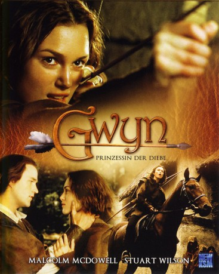
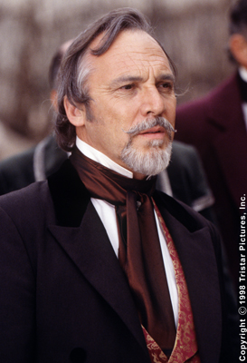

#8248 Gwyn - Prinzessin der Diebe
 
 IMDB-Wertung: 5.8 / 10
IMDB-Wertung: 5.8 / 10  Metascore: 0
Metascore: 0 
Keira Knightley als Gwyn, die Tochter Robin Hoods, die ohne Eltern aufwächst, da Marian gestorben und Robin auf Kreuzzug ist. Freundschaftlich verbunden ist sie mit dem netten, aber schlichten Froderick, der in sie verliebt ist. Als Richard Löwenherz im Sterben liegt, kehrt Robin Hood nach England zurück, wird jedoch von seinen Feinden, dem Sheriff von Nottingham und Prinz John, gefangengesetzt...
Jahr: 2001
Dauer: 87 Minuten
FSK: 6
Land: USA Studio: ABCTonspuren: DTS - ,
Untertitel: Deutsch,
Auflösung: 1080p (1920x1040) Größe: 8263 MB
Genre: Action, Drama, Komödie, Abenteuer, Fantasy, Animation/Trick, Familie, Musical
Regisseur: Peter Hewitt
Drehbuch: Robin Lerner
Soundtrack: Rupert Gregson-Williams
Darsteller:
 Malcolm McDowell als Sheriff of Nottingham
Malcolm McDowell als Sheriff of Nottingham Keira Knightley als Gwyn
Keira Knightley als Gwyn-  Stuart Wilson als Robin of Locksley
 Roger Ashton-Griffiths als Friar Tuck
Roger Ashton-Griffiths als Friar Tuck Jonathan Hyde als Prince John
Jonathan Hyde als Prince John Stephen Moyer als Prince Philip
Stephen Moyer als Prince Philip- Luke de Lacey als Tourtelot's Courier
- Paul Ready als Servant
- Jonathan Pembroke als McCamley
- Hannah Cresswell als Marian
- David Barrass als Cardaggian
- Del Synnott als Froderick
- Crispin Letts als Will Scarlett
- Adam Ryan als Conrad
- Brendon Gregory als Coachman
- Gaye Brown als Countess Tourtelot
- Peter MacQueen als Captain
- Christopher Whittingham als Baron
- Robert Rawles als Volunteer Peasant
- Andrew Dunford als Merchant
- Dick Ward als Herald
- Gillie Gratham als Mary Duff
 Peter Cellier als Archbishop
Peter Cellier als Archbishop- Stefan Iancu als Young Archer
- Marius Chivu als King Guard
- Iulian Postelnicu als Messenger
Datei: X:\2001\Gwyn - Prinzessin der Diebe (2001, FSK6, 1920x1040).mkv seit 12.02.2018
Festplatte: HD 1996-2002
 Es gibt insgesamt 102 Filme in der Gruppe '2001'
Es gibt insgesamt 102 Filme in der Gruppe '2001'